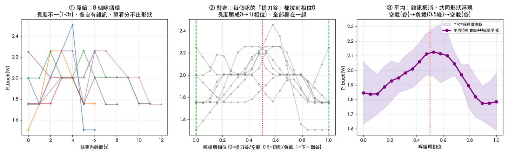
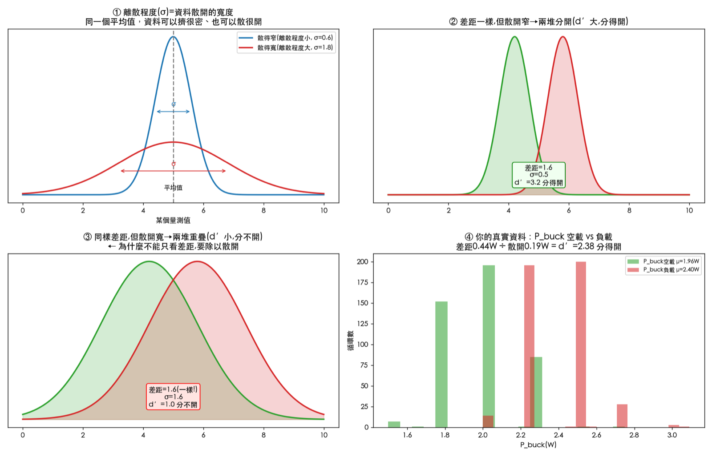
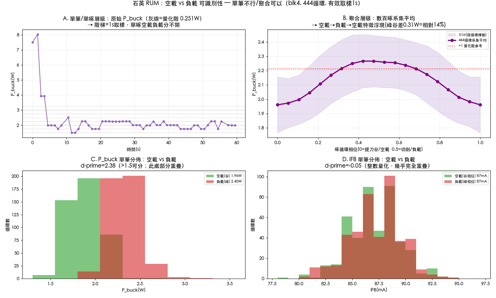

背景一句話：每鑽一個孔，刀具會反覆「下刀切一小段 → 提刀退回 → 再下刀」，每一次叫一個啄。切的時候是負載、退刀的時候是空載。我們想從電性訊號看出這個一起一落——但單一個啄的訊號被雜訊和量測精度蓋住，看不清楚。下面兩個概念就是用來把它挖出來。
概念一：系集平均——把幾百個模糊訊號疊出清楚形狀
核心比喻：每一個啄，都是同一齣戲「空載 → 切削 → 空載」的一次錄影，但每卷帶子都很模糊。單看一卷看不清劇情。但把幾百卷對齊同一個起點疊起來、取平均，隨機的雜訊會互相抵消（有正有負），不變的劇情會留下來。這就是系集平均，醫學的心電圖、物理的鎖相放大都用這招。

怎麼取平均？
不是把整段資料一次平均，而是先切成一個一個啄循環，再把這些循環「同相位疊在一起取平均」。圖中第 ③ 步那條紫線，就是 444 個啄在每個位置上的算術平均。
怎麼對齊提刀谷後平均？
問題：每個啄發生在不同時間、長度還不一樣，直接疊會錯位。解法：每個啄都有一個共同地標——提刀谷（刀退到表面、負載最低那一刻）。把每個啄的提刀谷都搬到同一個起點（圖中相位 0），444 個啄就對齊了，才能疊。
為什麼 X 軸是 0.0 到 1.0、用 0.5 當分界？
因為每個啄長度不同（淺孔約 1 秒、深孔約 3 秒），不能用「絕對秒數」當 X 軸，會對不齊。所以把每個啄的時間都壓成比例 0 到 1，這叫相位正規化：
- 0.0＝這個啄的提刀谷（空載，剛退刀）
- 0.5＝啄的中段＝下刀切最深＝負載
- 1.0＝回到下一個提刀谷（空載）
所以 X 軸是「相位」不是「時間」。0.5 不是人為切的，是切削本來就發生在循環中段，負載峰自然落在那裡。
「逐循環擾動（±1σ）」是什麼？
每個相位點上我有 444 個值（一個啄一個）。平均＝紫線；這 444 個值散開的程度＝紫色陰影帶 ±1σ。它在說：平均形狀很清楚，但單一個啄會在平均線上下抖動 ±1σ。這正是「單啄不可靠、要靠平均」的量化證據——陰影帶越窄代表越穩定。
概念二：d′——空載與負載到底分不分得開
系集平均讓我們看見「平均上有個一起一落」。但還要回答一個更嚴格的問題：隨便抓一個啄，光看它的訊號，分得出是空載還是負載嗎？ 量這件事的尺，就是 d′。
先搞懂「離散程度」
離散程度＝資料散開的寬度。同一個平均值，資料可以擠得很密、也可以散得很開——散得越開，離散程度越大。量這個寬度的尺叫標準差（σ）。

為什麼 d′ 要「除以離散程度」
這是關鍵。分不分得開，光看兩堆中心差多遠不夠，要看差距相對於散開有多大。 看圖中 ② 和 ③——這兩張的「差距」完全一樣（都是 1.6）：
| 情況 | 差距 | 散開 σ | d′ ＝ 差距 ÷ σ | 結果 |
|---|---|---|---|---|
| 圖 ② | 1.6 | 0.5（窄） | 3.2 | 兩堆分開，幾乎不重疊 |
| 圖 ③ | 1.6（一樣） | 1.6（寬） | 1.0 | 兩堆糊在一起 |
差距明明一樣，為什麼 ② 分得開、③ 分不開？因為 ③ 散得太開，把差距淹沒了。 所以判斷可分性，要問的不是「差幾瓦」，而是「差距是散開的幾倍」——這個倍數就是 d′。
回到真實資料
看圖中面板 ④，這是石英加工的實測 P_buck（驅動器直流端實功）：
d′ = (負載 2.40W − 空載 1.96W) ÷ 散開 0.18W ≈ 0.44 ÷ 0.18 ≈ 2.38
差距 0.44 瓦是散開 0.18 瓦的 2.38 倍，像圖 ② 那種「分得開」的情況。白話講：隨便挑一個啄，光看它的 P_buck，有約 88% 把握能說出這是切削還是空載。
d′ 數值對照
| d′ | 意義 | 對應訊號 |
|---|---|---|
| 0 | 完全重疊，分不出 | IFB（換能器電流）＝ −0.05 ≈ 0 |
| 1 | 看得出但會錯約 30% | — |
| 2 | 分得不錯（約 84% 對） | — |
| 2.38 | 清楚可分（約 88% 對） | P_buck（直流端實功） |
把兩個概念串起來：看對訊號才看得到
這就帶出整件事最關鍵的一句話。我們原本盯著 IFB（換能器電流） 看，覺得「空載負載沒差別」——因為驅動器的閉環會把電流鎖死，IFB 不管有沒有負載都幾乎不動（d′ ≈ 0）。負載資訊不在電流，而在 P_buck（直流端實功）：刀尖一旦吃料，系統要多吸實功，P_buck 上升 22%（d′ ＝ 2.38）。
